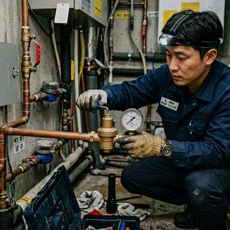

제우스시설관리 | 2025년 4월

하수구가 막히면 당황스럽지만, 경미한 막힘은 집에서 해결할 수 있는 경우도 있습니다. 다만, 잘못된 방법으로 시도하면 상황이 더 악화될 수 있으므로 아래 가이드를 참고해 주세요.
가장 간단한 방법입니다. 주방세제를 배수구에 넉넉히 붓고, 끓인 뜨거운 물을 천천히 부어줍니다. 기름때가 원인인 경미한 막힘에 효과적입니다. 단, PVC 배관에는 100도 이상의 끓는 물 대신 60~70도의 뜨거운 물을 사용하세요.
베이킹소다 1/2컵을 배수구에 넣고, 식초 1/2컵을 부어줍니다. 거품이 발생하면서 경미한 이물질을 분해합니다. 30분 방치 후 뜨거운 물로 씻어냅니다. 화학 세정제보다 배관에 안전합니다.
의외로 배수구 거름망에 쌓인 이물질만 제거해도 배수가 개선되는 경우가 많습니다. 고무장갑을 끼고 거름망을 분리하여 쌓인 머리카락, 음식물 찌꺼기를 제거합니다.
배수구 전용 압축 펌프(가정용)를 사용하면 공기압으로 경미한 막힘을 해결할 수 있습니다. 배수구에 밀착시킨 후 여러 번 펌핑합니다. 이때 넘침에 주의하세요.
싱크대 아래 S자 또는 P자 모양의 트랩을 분해하여 직접 청소합니다. 아래에 대야를 두고, 트랩 양쪽 너트를 풀어 분리합니다. 내부에 쌓인 이물질을 제거하고 다시 조립합니다.
전문가 도움이 필요한 경우:
✅ 위 방법으로 해결되지 않는 경우
✅ 여러 배수구가 동시에 막힌 경우 (본관 문제)
✅ 배수구에서 역류가 발생하는 경우
✅ 심한 악취가 동반되는 경우
✅ 이물질(칫솔, 장난감 등)이 빠진 경우
이런 경우 무리한 시도는 배관 손상으로 이어질 수 있습니다. 제우스시설관리 010-4406-1788로 연락주시면 28분 내 전문 기술자가 출동합니다.